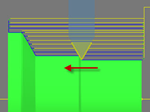

Passes horizontales
Passes verticales
Coupe arrière
Conjointement avec le mode de tournage, ce paramètre détermine la direction de coupe de l'outil.
 |
|
|
Passes horizontales |
Passes verticales |
Coupe arrière |
Horizontal: permet d'effectuer une coupe depuis la partie avant du brut vers la partie arrière, vers la broche principale.
Vertical: permet d'effectuer une coupe vers l'extérieur, vers le trait d'axe de l'usinage du diamètre extérieur. Permet d'effectuer une coupe depuis le trait d'axe, vers l'extérieur de l'usinage du diamètre intérieur.
Découpes arrières: pour les outils avec une géométrie particulière qui nécessitent de contrôler l'amincissement des copeaux. La découpe se fait du côté arrière vers l'avant du brut.